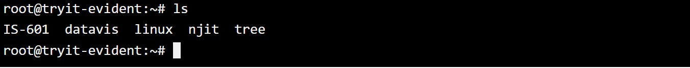
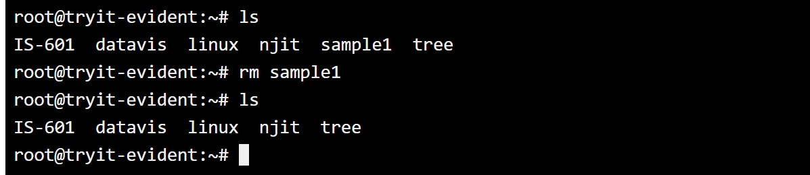
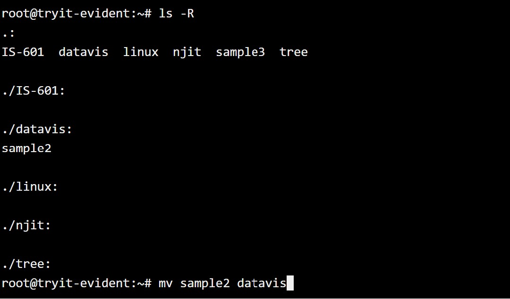
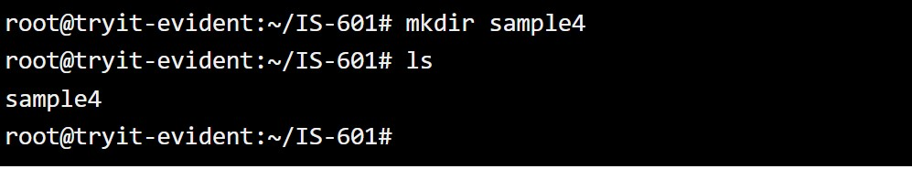
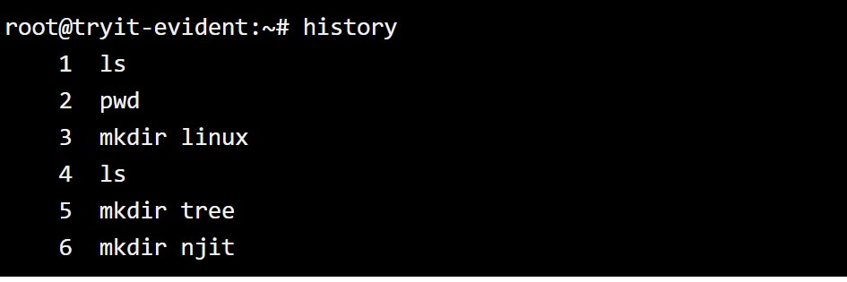

This tutorial gives a brief introduction to beginner level Linux commands which are needed when dealing with file
management and terminal in Linux.
Listing file (ls) - If you want to see a list of files on your UNIX or LINUX system, use 'ls' command. It
shows the files/directories in your current working directory.
You can use 'ls -R' command to show all the files in the subdirectories as well. It is important to note here that
this command is case sensitive, so typing 'ls -r' will result in an error.
The 'cat' command is used to display text file. It can also be used for copying, combining and creating new text files.
To create a new file:
cat > filename
Add content
Press enter and new file will be created

The syntax to merge two files using 'cat' command is 'cat file1 file2 > new file'
The 'rm' command removes any file from the system without confirmation. To remove a file use the
syntax 'rm filename'

To move a file use the command 'mv filename new_file_location' and for renaming a file 'mv filename newfilename'

Directories can be created on Linux using the command 'mkdir directoryname'. This will create a sub directory in
your current working directory, which is usually your home directory.

You can also create more than one directories at once, using 'mkdir dir1 dir2 dir3'.
To remove a directory, use the following command 'rmdir dirname'. Ensure that the directory you wish you remove
is empty before deletion.
To rename a directory 'mv directoryname newdirectoryname' is used.
The 'Man' command stands for manual which is standard reference for Linux OS. It is similar
to help command found in other software.
The 'history' command shows all the commands that you have used in the past for the current terminal session.
This can help you refer to the old commands you have entered and re-used them in your operations again.

The 'clear' command clears all the clutter on the terminal and gives you a clean window to work on,
just like when you launch the terminal.